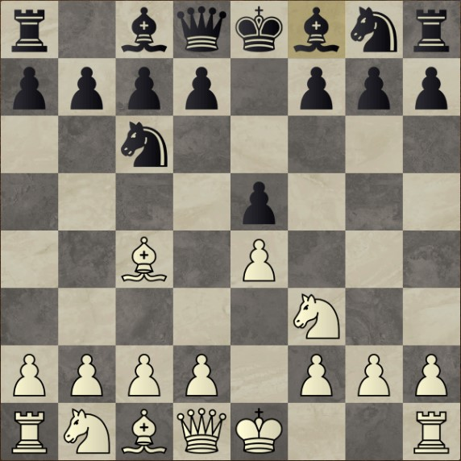
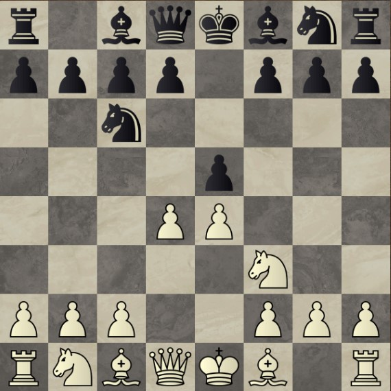
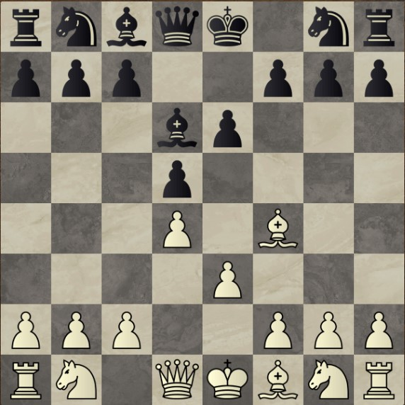
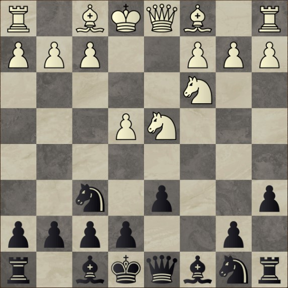
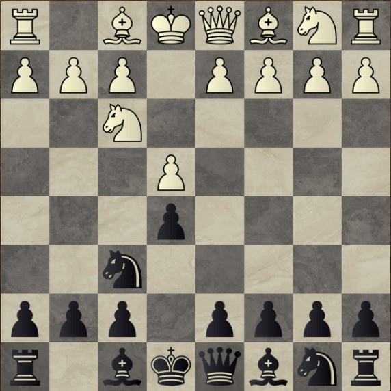
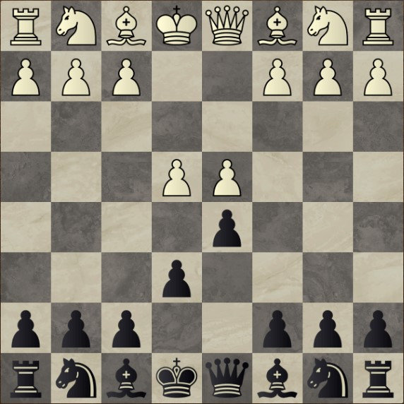

Aperturas y defensas
Ya conociendo las reglas del juego y el valor que adopta cada pieza (siempre dependiendo de la circunstancia) vamos a ver algo de teoría del Ajedrez, ya que, tanto aperturas como defensas, fueron estudiadas durante los últimos siglos para comprobar sus puntos fuertes y sus falencias. Habiendo ya aclarado esto, pasemos a definir qué es cada cosa. Apertura es lo que proponemos con las piezas blancas, se da en una secuencia de movimientos (que no suelen ser más de 5) en la que el tablero nos muestra un esquema de piezas que es adecuada a la posición que queremos llegar, por otro lado, las defensas, son exactamente lo mismo pero con las piezas negras, ya que de la propia apertura, las negras pueden conducir la partida a una posición ya estudiada en la que, pueden tener (o no) la ventaja o la igualdad, tanto en posición como en material.
Aperturas
La apertura española es la más empleada a nivel mundial por todos los GMs. La misma consiste de las siguiente jugadas: 1. e4 e5 2. cf3 cc6 3. ab5. Las blancas buscan un rápido control del centro, imposibilitando que el caballo retome el peón de d5 una vez capturado.

La apertura Italiana es quizás una de las aperturas más agresivas de la historia del Ajedrez, buscando un rápido control del centro desarrollando el alfil por c4 (a diferencia de la Española que el alfil va a b5), las blancas buscan controlar y lanzar una lluvia de peones en el centro, buscando así el control y ganar espacio.
La apertura escocesa es una de las grandes elecciones y recomendaciones para los principiantes en el juego, ya que nos enseña lo valioso que es mantener un peón en el centro, saber cómo defenderlo, comprender cuándo enrocar y/o cambiar damas, ayuda a entender conceptos de peones pasados en los "endgames". En pocas palabras, una gran apertura para iniciar e incluso para un nivel intermedio.
Una de las aperturas más comúnes dentro de lo que son las aperturas semiabiertas, es la apertura Inglesa, una apertura agresiva, que busca ataques en el flanco de dama, usualmente buscando el enroque largo para centralizar las torres y piezas mayores, así como también poner seguro al rey.
Dentro de las aperturas semiabiertas tenemos también los llamados "sistemas", los mismos buscan disminuir tanto el memorizar jugadas y variantes así como también disminuir los conocimientos que la persona pueda tener sobre los "middle-games", uno de los más habituales y utilizados por el mismísimo Magnus Carlsen, es el llamado Sistema Londres, el cual luce de la siguiente manera
Y por último (pero no menos importante), tenemos la apertura con la cual el ajedrez se dio a conocer, ya que la misma es también, el nombre de una famosa y aclamada miniserie de Netflix, "Gambito de Dama" o bien, "Queen's Gambit" la misma se da luego de que las blancas entreguen un peón en la apertura buscando iniciativa en el flanco de dama, sabiendo que el mismo peón que perdieron, pueden recuperarlo luego de unas pocas jugadas
Defensas
La principal defensa (y también arma de ataque) de las negras cuando están obligadas a ganar, es la defensa siciliana, dicha defensa es considerada dentro del mundo de los GMs como la más sólida y que más ventaja otorga de cara a los middle-gamesy los end-games, dicha defensa adopta la siguiente posición:
Ya habiendo hablado de la siciliana, vamos a profundizar en la llamada "Sicialiana Najdorf" la cual fue inventada por el ajedrecista Argentino llamado Miguel Najdorf, quien fue campeón argentino en nueve ocasiones entre los años 1941 y 1964. La Siciliana Najdorf es considerada la mejor defensa en la élite del ajedrez, y luce de la siguiente manera
Si de defensas sólidas hablamos, claramente en dicha lista no estaría incluída la "Defensa Escandinava" ya que dicha defensa rompe uno de los fundamentos del ajedrez, que es no desarrollar la dama prematuramente. En la Escandinava las negras ofrecen el peón de d5 para luego retomar el peón blanco con la dama como veremos a continuación
Así como tenemos la apertura escocesa como principal arma para los principiantes e intermedios, en las defensas tenemos algo que cumple con los mismos beneficios, que es la llamada "Defensa Petrov", en la cual uno busca llegar a posiciones simétricas y poder aumentar la presión sobre los peones centrales del blanco, además de tener un rápido desarrollo de piezas y acelerar el enroque corto.
Cerca del final de esta breve introducción de defensas, tenemos la defensa francesa, la cual es de las más sólidas que se pueden jugar y siempre nos llevará a partidas largas con finales de peones, el único inconveniente que tenemos en la francesa es que nuestro alfil blanco queda, en la mayoría de oportunidades, bloqueado por la propia disposición de peones, por lo que nos llevará más de una jugada poder desarrollarlo.
Y por último, tenemos la defensa Carokann, que recibe su nombre tan particular por sus dos inventores, los ajedrecistas y matemáticos "Horatio Caro" y "Marcus Kann", esta defensa tiene muchas similitudes con la anterior mencionada defensa francesa, sólo que el alfil de c8 ya no queda encerrado por el peón de e6.